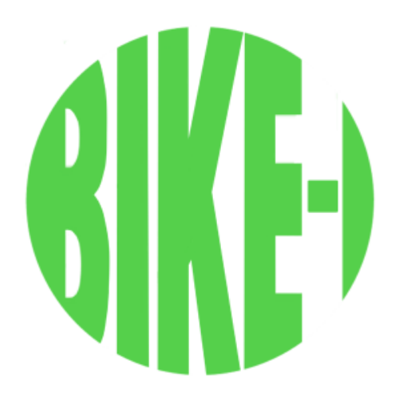
This study aimed to develop a mobile application that highlights the bike lanes in Metro Manila with the use of the A* algorithm, a pathfinding algorithm, and Google’s API. The app was created and developed using Android Studio and Firebase, which was served as the app's database. The Bike-I app offers features such as searching, voice navigation (Text-to-Speech), reporting accidents, and bike lane route navigation. This study is created and developed by three members including myself. My major contribution in this project is the front-end development of the app, and the app's prototypes and design.
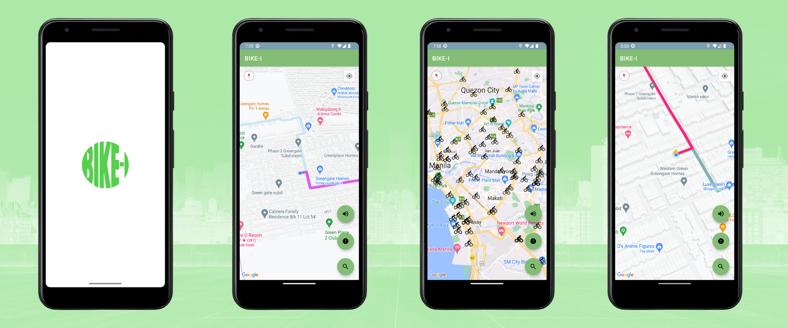
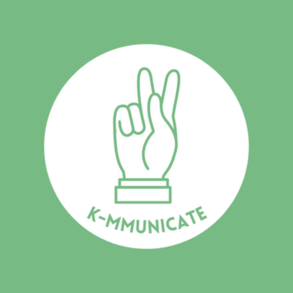
The purpose of the system is to help people especially those people without hearing or speech disabilities understand how FSL works. The system will have camera functionality through which it will do a real-time FSL detection. Instead of text, the system will translate FSL into an audible speech for each detection. This study is created and developed by three members including myself. My major contribution in this project is the front-end development of the website.
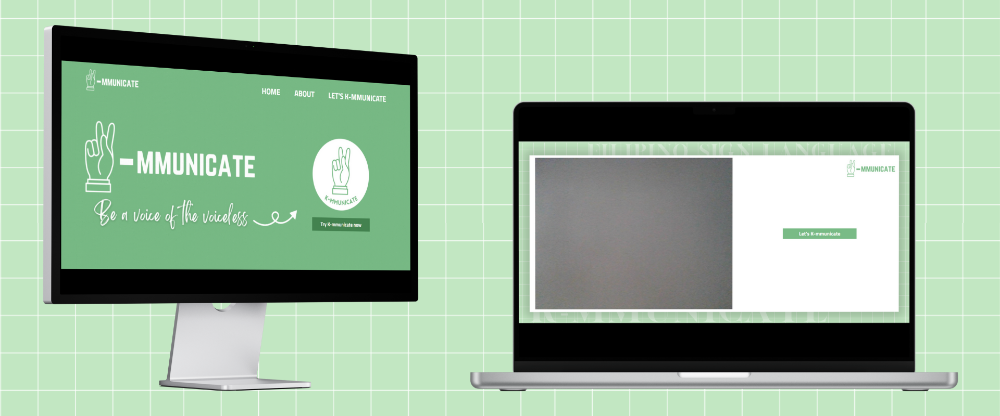
This is an early UI/UX Design or prototype for our thesis project (Bike-I). The design was changed many times until the final deployment of the app due to limited capabilities of the developers. Thus, the diiference between this design and the final development.
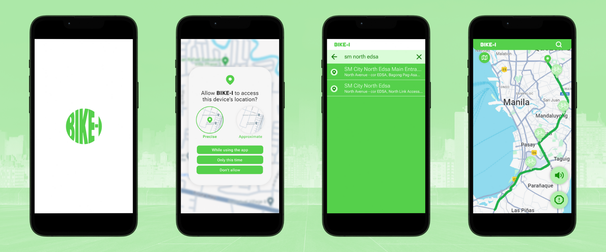
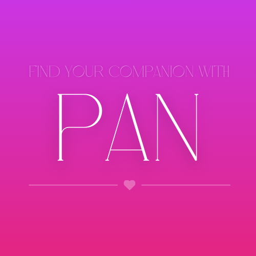
Find your companion with PAN.
PAN is a vibrant dating app designed to connect people and find their companion. Whether you are
looking for casual talks or meaningful relationships, PAN offers a safe-space to explore, chat, and meet individuals that matches
your type or personality.
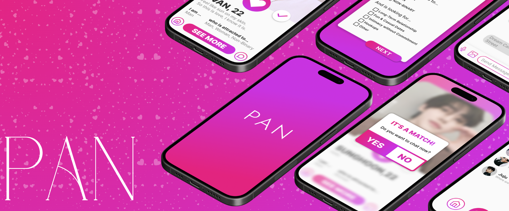
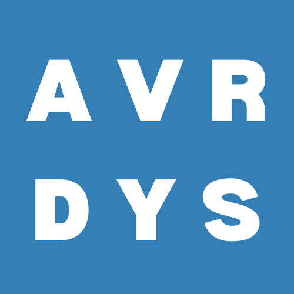
Style for Every Day in Avery Dayes
Avery Dayes is a clothing e-commerce website for your everyday clothing. From plain and basic to fashionable and trendy,
Avery Dayes offers high-quality, comfortable every day clothing so you won't run out of ideas. Avery Dayes offers thousands of brands for
you to choose.Now strut the highway, as the world is your runway with Avery Dayes.
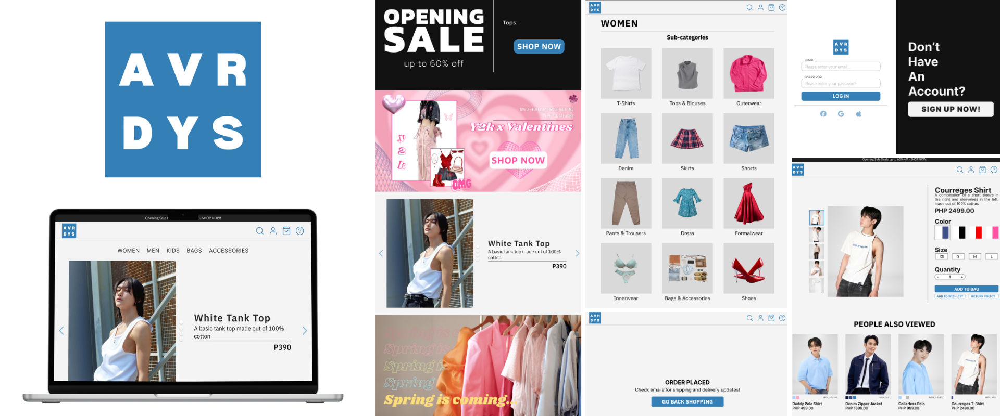
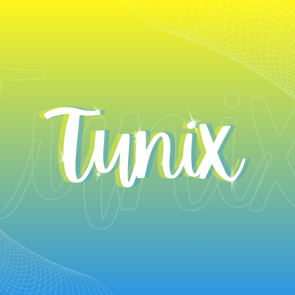
Tune In, Vibe Out!
Tunix is a music streaming app with a feature that generates a playlist based on the input you give. Whether you want a playlist
based on your current mood, songs from favorite artist, or a songs that titles start with a consonant, Tunix can generate endless playlists.
Discover new and trending hits, stream your favorite tracks, listen to podcasts. and many more. Experience high quality audio and easy-to-use features.
Let Tunix be the soundtrack of your life!
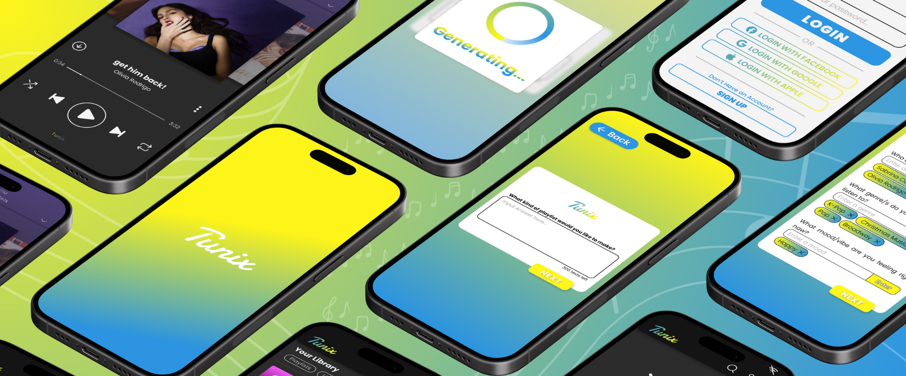